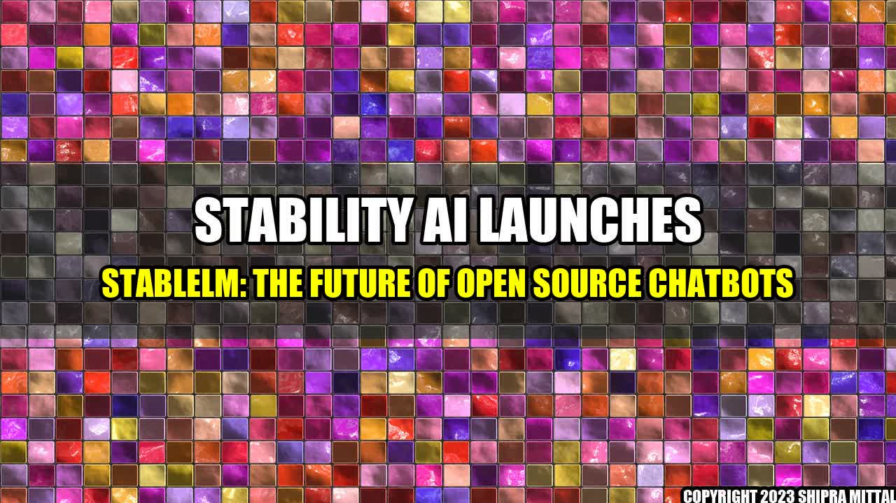

The Rise of StableLM: An Open Source Chatbot Alternative

Imagine being able to chat with a machine like you chat with a friend. This is not a far-fetched idea anymore. Chatbots have become increasingly popular over the years, providing businesses and individuals with AI-powered support and delightful conversations. And now, Stability AI has released StableLM, an open source chatbot alternative that brings a new level of stability and accuracy to the conversation.
StableLM is set to revolutionize the chatbot industry, thanks to its state-of-the-art machine learning algorithms. It boasts a variety of features that improve the accuracy and stability of chatbots, such as:
- Better natural language processing
- Higher semantic understanding
- Improved context awareness
- Greater adaptability
With these features, StableLM ensures that chatbots can understand user intent and respond in a way that is both accurate and natural. But what makes it stand out is its open source nature.
The Advantages of an Open Source Chatbot
Having an open source chatbot like StableLM offers a number of benefits:
- Customization: With an open source chatbot, users can customize it to suit their specific needs. This means they can add or remove features, integrate it with other software, and more.
- Transparency: Users can see the code and understand how the chatbot works. They can also contribute to its development and suggest improvements.
- Cost-effectiveness: Open source chatbots often have a lower cost of ownership than proprietary ones, as users can modify and maintain the code themselves.
Conclusion: The Future of Chatbots
- StableLM is an open source chatbot alternative that promises stability, accuracy, and customization.
- Open source chatbots offer transparency, cost-effectiveness, and the ability to customize functionalities.
- The rise of stable and accurate chatbots is the future of business-to-consumer communications, customer support, and more.
References and Further Readings
Hashtags: #StableLM, #OpenSourceChatbot, #AI, #MachineLearning, #CustomerSupport, #BusinessToConsumer, #ChatbotRevolution
Category: Artificial Intelligence
Author: Akash Mittal
Social
Share on Twitter Share on LinkedIn